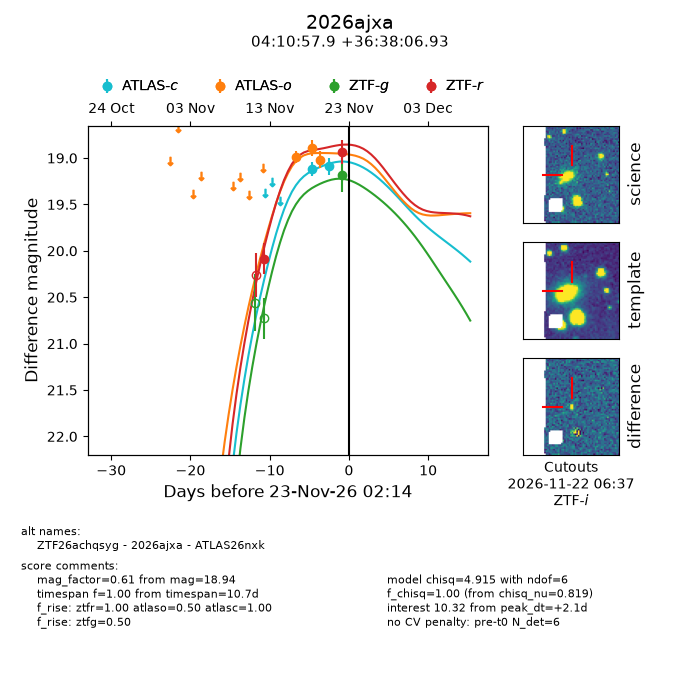
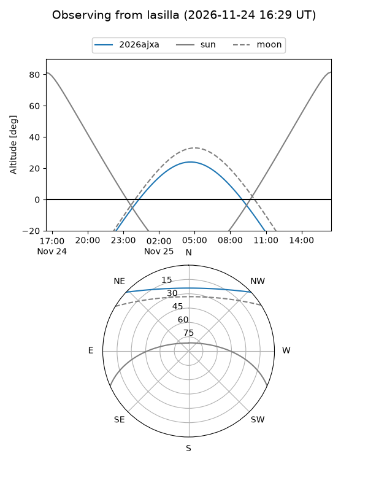
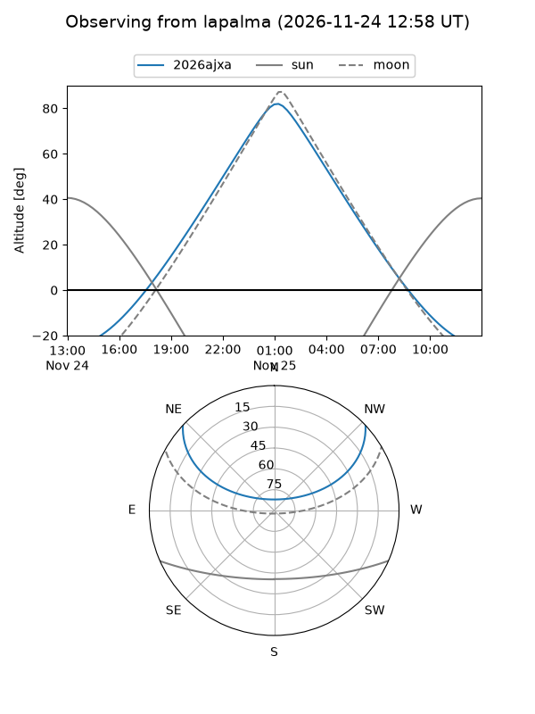
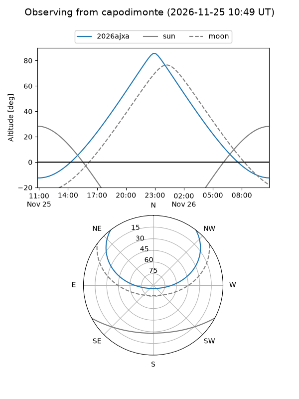
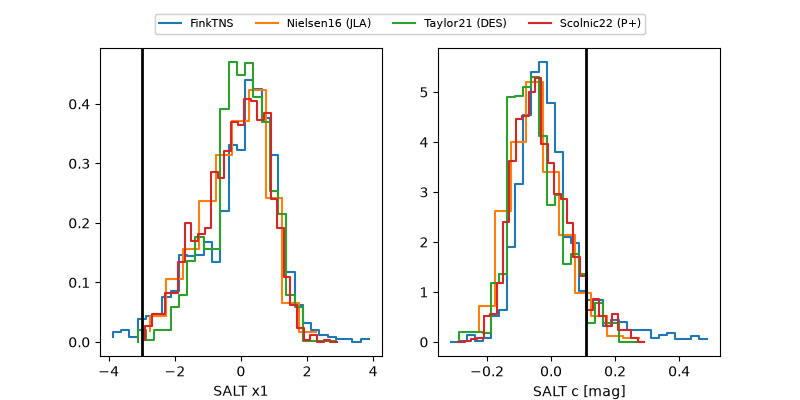

2026ajxa
Target 2026ajxa at 2026-11-23 02:15
Aliases and brokers:
FINK-ZTF: ztf.fink-portal.org/ZTF26achqsyg
Lasair-ZTF: lasair-ztf.lsst.ac.uk/objects/ZTF26achqsyg
ALeRCE-ZTF: alerce.online/object/ZTF26achqsyg
YSE-PZ: ziggy.ucolick.org/yse/transient_detail/2026ajxa
TNS name: wis-tns.org/object/2026ajxa
Direct TNS query: direct search
alt names
ZTF26achqsyg (ztf,fink_ztf)
2026ajxa (tns,yse)
ATLAS26nxk (atlas)
Coordinates:
equatorial (ra, dec) = 62.7413,+36.63526
equatorial (HMS+DMS) = 04:10:57.91,+36:38:06.93
galactic (l, b) = (161.5994,-10.84156)
Flags:
peak dt: +2.1
Photometry:
last atlasc=19.09, atlaso=19.02, ztfg=19.18, ztfr=18.94
2 atlasc, 3 atlaso, 1 ztfg, 2 ztfr detections
Lightcurve

Visibility



Additional plots
